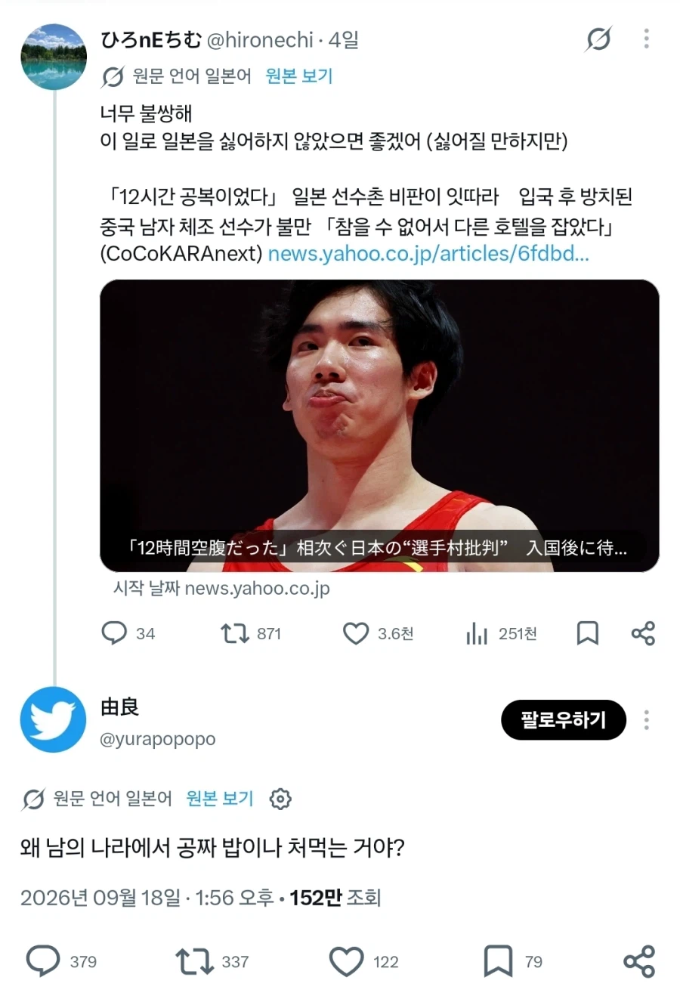

니네가 초대했잖아 이 스웨덴같은 새끼들아

니네가 초대했잖아 이 스웨덴같은 새끼들아

븅신새낀가...
씹새끼들 지네는 공짜 핵 세 번이나 쳐먹은 주제에
억까하지 마라
하나는 유료다
세번째는 지들이 좋다고 먹어놓고 토한거라.....
무료 시식 2회하고
1번은 돈내고 사먹음
무료시식을 두번이나 했으면 한번쯤은 돈내고 먹어야지
개드립에도 저런애들 몇몇있던데 ㅋㅋ
니들이 초대했잖아 ㅋㅋㅋ
앞으로 일본은 국제 스포츠대회에서 자급자족 하겠다는거네 ㅋㅋ
밥 줘!!
스왜덴
스웨덴 ㅋㅋㅋㅋㅋㅋㅋㅋㅋㅋㅋ
누가 개최하라고 칼들고 협박함?
그럼 AG를 개최하지 말든가 ㅋㅋㅋㅋ
운동선수들 밥을 굶기냐 엄청 먹을텐데
진짜 좆병신인가
손님을 불러놓고 밥을 안준다?
자. 이제 누가 거지지?
스왜덴 ㅋㅋㅋㅋㅋㅋ
밥을 안줘??
개최라는 개념을 모르시나요?
역시 탈아입구의 나라다
스"왜"덴오브이블
지들이 개최국이란 사실을 까먹은건가 국제대회 개최국이면 밥이랑 숙소는 제공해야한다는 상식을 모르는건가 ㅋㅋㅋㅋㅋ
중국은 초대하면 밥은존나잘줄껀데 일본은 밥도안주네; 미친새끼들 밥은줘야지
좋아요는 적고 인용이랑 답글 존나 달린거 보니 개욕처먹는중 ㅋㅋ